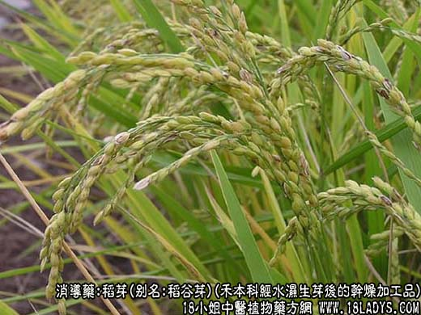
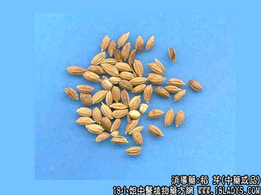
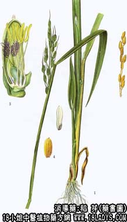

本品为少常用中药。始载《名医别录》，原名蘖米。《本草纲目》蘖米项下载“稻蘖—名谷芽”。
别名：稻谷芽。
来源：为禾本科一年生或多年生，陆生或水生草本植物稻的颖果，经水湿生芽后的干燥加工品。栽培。
产地：全国各地均有生产。
性状鉴别：本品呈扁长椭圆形，长7～9毫米，宽3～4毫米。外壳黄色，具短细毛，有脉5条，基部有长0.8～4厘米的须根。稃壳内含种仁一粒（大米）。质坚，粉性。气无，味微甘。以颖果饱满，色黄，生过根芽者为佳。
炮制：同谷芽。
效用：同谷芽。
注：此种稻芽，南方称谷芽。京津二市将谷芽（粟芽）、稻芽分别药用。